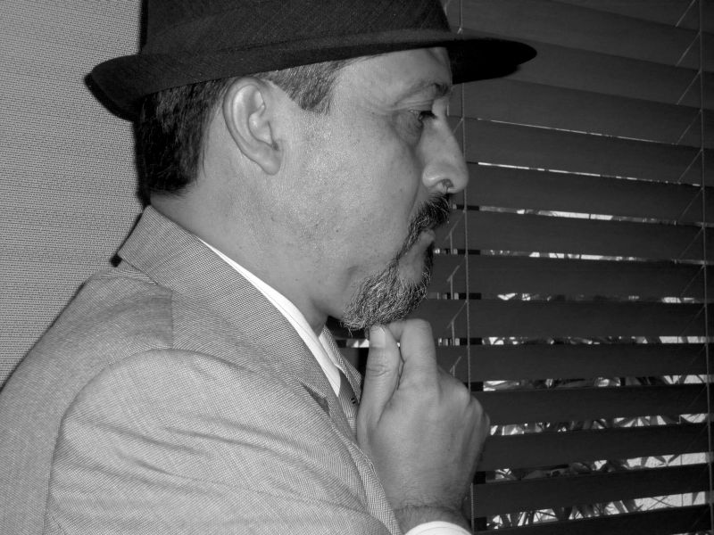
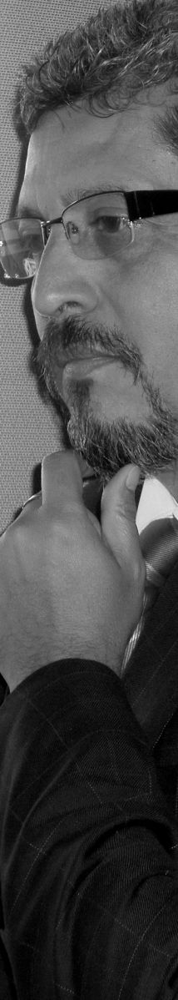
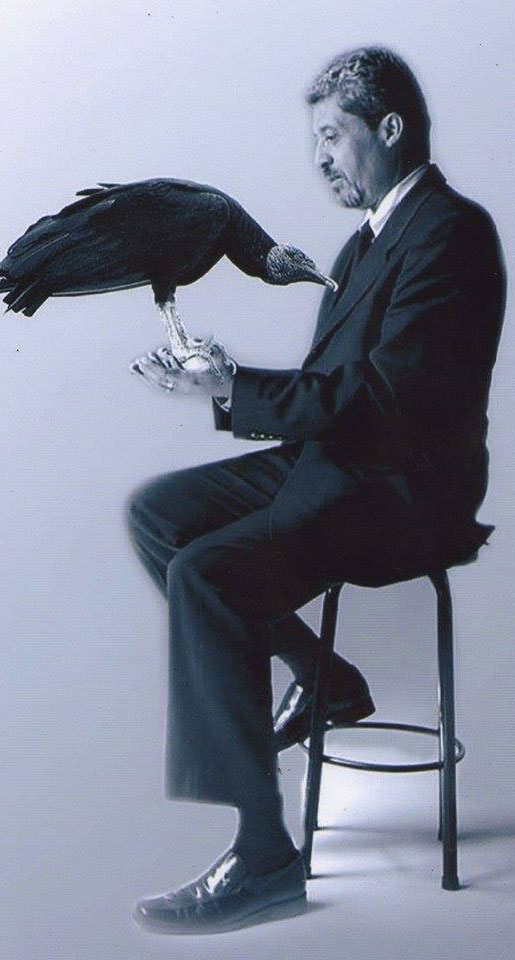

Conversación con Óscar González
TRASESCENA CON FANTASMA AL FONDO
Por Cristóbal Peláez González
Transcripción: Karen J. Crespo
Me gusta escucharme a mí mismo. Es uno de mis mayores placeres.
A menudo mantengo largas conversaciones conmigo mismo,
y soy tan inteligente que a veces no entiendo ni una palabra de lo que digo.
Oscar Wilde

Una conversación iniciada hace dos décadas. Ómar Orozco Jiménez, esa especie de Walter Burns, personaje marrullero de Primera Plana de Billy Wilder, lo había convocado como colaborador de la revista Vía Pública, cultura en Medellín y me había impuesto, dada nuestra complicidad editorial, una labor de espionaje intelectual: “ve y mira qué tal es ese nuevo sujeto. Es un abogado inclinado a las letras que quiere hacer parte de nuestro equipo”.
La conversación de pesquisa comenzó a las diez de la mañana y de manera ininterrumpida, a golpes de café, se prolongó hasta muy adentro de la noche. Fue una maratón de doce horas donde se habló de literaturas del mundo y, de manera sospechosa, sobre teatro. Esa noche, en mi libreta de espía, anoté: “Odia el teatro y no come”.
Lo que se había producido, y no escribí, era una suerte de hechizo. Vi atacar de manera cruel el arte teatral, y en ningún momento me apresté a defenderlo; es más, había coincidido en ese estado de repudio. Óscar González había provocado en mi una irritación, una convulsión, un malestar en el teatro. Hasta entonces los “no me gusta”, “me es indiferente”, “detesto el teatro”, provenían de gente que no había tenido una aproximación real al arte escénico, o había sufrido alguna experiencia traumática –¡cuántos espectadores han sido violados a golpes de un pésimo espectáculo!–, o por diversas circunstancias, muy entendibles, era ajena a ese lenguaje.
Entre la intelectualidad de la aldea era muy “chic” el desdén bajo las consignas “la pintura es el arte”, o “asisto a la ópera”. Era incluso síntoma de un altísimo nivel cultural ser indiferente y apático al teatro. Se creía –¿aún se cree?– que el teatro era un invento griego que había muerto con Shakespeare, y que lo de ahora era un residuo ocupacional de cochambrosos. Con Óscar González lo importante era cómo esgrimía su cadena de argumentación; no odiaba el teatro per se, es más, lo reclamaba, y consideraba inocua nuestra parroquial manera de concebirlo y ejecutarlo –aquí la palabra ejecutar adquiere una dimensión guillotinesca–. Había en él –ese término que le es tan caro– provocación; mucho de revulsivo, de incitación.
La cultura teatral no podía ser una serpiente que se engulle su cola, debía abrirse hacia el inabarcable conjunto de las otras artes, de las ciencias, de la totalidad. El teatro parecía girar sin eje, no alcanzaba el ideal del simbolismo, del barroco, del expresionismo. Estaba demasiado aherrojado a la idea de representar una historia, un cometido que ya cumplía deplorablemente bien la televisión.
Una línea más abajo anoté: “Lo hace sentir a uno muy mal”.
De acuerdo con ello, lo invité a que se convirtiera en provocador profesional. Ahora lo hace en varios grupos de la ciudad. “Me hiciste hablar, me hiciste exhibir, yo no habría hablado con nadie, pero eso de hablar en el teatro es tan esencial, tan relevante y tan trascendental. Me siento muy bien, me siento muy realizado cuando veo las obras, me da una melancolía tremendamente hermosa”.
Tercera anotación en la libreta de espía: “A veces argumenta a gritos. Aprendí mucho, me reí mucho”
Esa pasión incontrolable por los libros…
(Risa) Sí, sí, sí, obsesiva. No sé dónde comienza eso, no logro establecerlo. Para decírtelo de una manera quizás un poco esnobista o excéntrica, no ha comenzado todavía. Un libro me llama, un autor me llama, se me revela de una manera muy misteriosa y es un azar que no puedo contener, que no puedo dominar, que no racionalizo. Mi condición de lectura es muy ecléctica, muy barroca, muy desordenada también. Cuando leo no estoy estableciendo una carrera maratónica con nadie, por eso es una obsesión muy transparente, no leo para llenar estadísticas.
Lector libertino
Sí, aún participando en la academia. Ahí trato de que exista una inmensa libertad como lector, como creador, como propiciador o provocador de otras lecturas.
¿El paraíso una inmensa biblioteca?
No. Tuve un sueño: Hölderlin me decía “lee este libro”. Abro el libro y está todo blanco, y Hölderlin lee mientras que yo no puedo hacerlo. Un sueño muy de acuerdo con mi ideal, que no consiste en tener una inmensa biblioteca, en exhibir una gran cantidad de libros, sino en vivir el que leo en el momento, aquel que estoy auscultando, que intento saquear, excavar, en el que trato de verme a mí mismo. Mi biblioteca se realiza mientras leo, cuando no leo no existe, no hay libro, nada, no quiero que exista nada para no llevar ese peso muerto. Cuando tienes tantos libros que no se pueden leer no tiene sentido tenerlos allí. Desde el principio de mi vida nunca quise tener una inmensa biblioteca, dado que después se haría para mi inaccesible, inabarcable.
Trepemos unos momentos al barrio Manrique, a tu juventud
Nací en Cañasgordas y de ahí mi padre, que era secretario de alcaldías, tuvo con mi madre una especie de trashumancia constante por los traslados administrativos. Así fue como pasamos por La Estrella, Itagüí, y finalmente fuimos a vivir al barrio Manrique.
Seguramente había una gran biblioteca en tu casa
No, mirá que no. Cierto que mi padre era buen lector, también mi madre, pero nunca me leían, no existía esa preocupación. Fui como un observador de lo que ellos hacían, tenía conciencia de observarlos, y lo que necesitaba de ellos lo traía hacia mí, lo instalaba en mi mundo y no lo sacaba.
Nunca fuiste un niño de juegos
No, era demasiado medido, demasiado frío…
Serio
Excesivamente.

No hubo niñez
No, no hubo. Yo quería vivir en un mundo en donde no tuviera contacto con nadie, que los otros se decidieran a preservarme, apartarme de los otros seres humanos, no tener que hablar, no tener que salir; un mundo donde yo pudiera hacerlo absolutamente todo: el teatro, la lectura, el pensamiento.
Un antisocial
No he podido tener muy buenas relaciones con los demás, de tal manera que me inventé un método para poder hablar con los otros, que se llama construcción de relaciones de sentido o hilaciones teóricas, una forma de hacer soportable el contacto con los demás.
Mejor hablar con los libros
Mi padre conocía los libros del index, entonces también establecía su censura sobre el lector que era y quería ser. Quizás de ahí provenga un poco el hecho de que no pueda tener bibliotecas inmensas: no puedo llevarlas en mí porque el padre puede censurarlas, hacer inquisición sobre ellas, pero si llevo los libros dentro de mí no hay manera de que pueda hacerme inquisición.
Farenheit 451
Siempre estoy inventándome mundos para contrarrestar cualquier violencia contra el mío, esas turbulencias que suscitan los demás. Procuro que mi órbita interior sea indestructible. Nunca tuve contacto con ese mundo de Manrique porque me inventé otro, el deporte. Yo siempre estaba tratando de alienarme al máximo. En el fútbol y en el basquetbol hacía lo de ellos, entonces no necesitaba hablar de arte: me escondía en el deporte.
Tu falansterio, esa palabra tan oscargonzaliana
Esos universos utópicos creados por Fourier, Marinetti, Blake… La realidad no está dada, debo inventarla. El falansterio es una creación donde se puede construir una comunidad con quienes están en condiciones de intervenir, dada su formación, sus intereses, su inclinación por la química, su visión y práctica de la sexualidad, la técnica, el arte, la visión del mundo desde el delirio mismo o desde la racionalidad misma; en ese falansterio podía caber absolutamente todo sin que hubiese nunca lo que más odio del mundo: la discordia. Me interesa mucho lo que André Bretón llamaba La coincidencia turbadora, y ahí, en ese falansterio, yo podía ser Fourier o Goethe, al mismo tiempo, de la misma manera. Goethe habla del eclecticismo, yo continuo tratando de mantener al máximo un realizado eclecticismo. Ecléctico para Goethe es aquella persona que está preparada, o que tiene formación o inclinación intuitiva o racional para mezclar cosas, para hacer mixturas, para hacer Ars Combinandi, fíjate qué bello: para hacer sincretismos sin que eso resulte ser lo que en nuestro medio se llama todero o culebrero.
Y como hombre de gran erudición, venías de una tradición intelectual muy propia de nuestro medio: el desprecio por el teatro. De pronto, de una manera extraña, acabas en él como asesor literario (y Ars combinandi) de varios grupos de la ciudad
Sí, lo detestaba, pero mirá que tenía un director y teórico al cual idolatraba en secreto: Bertolt Brecht. Esa relación de odio –y de indiferencia– provenía un poco de que no se hacía en Medellín un teatro que lograra inquietarme, pues no aparecían allí los hilos tensos que realizan esa temperatura del ser. Era un teatro demasiado apegado al realismo de la revolución, no tenía estética contundente para mí, como aquella que buscaba cuando leía a Beckett, a Kantor, Marlowe, Adamov.
¿Tan estrecho era el panorama?
Era un teatro demasiado contenido en una propuesta, con el propósito revolucionario de transmitir una condición de cambio en el mundo, y como tal era un teatro que podía hacerse de cualquier manera, dado que los ideales de justicia y libertad son inherentes al ser humano.
Los ideales de justicia y libertad en una envoltura estética se justifican por sí mismos. ¿Quién puede atacar eso?
Sí, puesto que son urgencias sociales. Pero no me vuelvas a decir “el odio de los intelectuales al teatro”, no me etiquetes ahí, nunca he tratado con ellos, soy un disidente.
En este breve lapso de 21 años, desde nuestra primera conversación, ¿ha cambiado algo?
No hemos llegado a la mayoría de edad, todavía no. A mí me problematizó mucho haberme implicado. Me convertiste en una suerte de médium para el teatro, me antojé del deseo de exhibirme, de provocar tensiones con otras dimensiones de la estética. Lo mío no es instruccionalidad ni instrumentación de una propuesta teatral, la intervención siempre es de quienes hacen el teatro, nunca he intentado sustituir al teatro que ustedes hacen. Soy, por lo demás, un espectador crítico con la obra acabada, pero no me involucro nunca en el proceso de realización. Esa condición de libertad crítica y creadora es la que me permite observar ahora que el teatro ha evolucionado tremendamente en la ciudad, y yo me siento muy bien, de manera narcisista u obscena, pues he participado de esa evolución, de esa transformación.
¿Así tan categóricamente?
Sí, lo estoy diciendo esta tarde, que quede constancia grabada, raras veces procedo a atribuirme cosas.
El teatro requería contextualizarse…
No, no, excúsame, se trata de una dialéctica: no contextualizo, porque eso exactamente es lo que odio, y descubrí hace poco cómo se llamaba. Lo que tú llamas contextualización yo lo llamo medio propiciatorio de creación; y ¿cuál puede ser para mí estética teatral? Llámalo naturaleza, llámalo ciudad, la relación con los otros, cómo sucumbimos ante los otros, cómo nos humillamos ante los otros, cómo esa humillación que los otros nos causan se convierte en un gran libro de provocación. Hablo en el sentido de Bataille, soberanía en el ser.
Repudias el término contextualización, hablemos, si lo prefieres, del término referencial. El teatro en Medellín se estaba quedando en lo brechtiano –culpa de Brecht nunca fue–, no lográbamos abrirnos a una totalidad de la estética
Era un teatro que no se relacionaba con las otras artes, le faltaba su manera renacentista. Yo me muevo entre los principios del renacimiento y el principio barroco, la combinatoria de todas las artes: el libro total, el cuadro total, el hombre total. Acuérdate del Gracián: el hombre de todas horas es el hombre que sabe de astronomía, de música, de teatro; un ideal que se puede lograr.
Digamos que el teatro se ha vuelto un arte de especialistas, creadores cuya única referencia es el teatro mismo, otra forma de religión, de enajenación
Eso fue lo que hizo sucumbir el teatro un poco, la tendenciosidad de la orientación, la instruccionalidad. Es eso de formar formar formar. Tenemos la obsesión por llevar a otros a A, y uno ni siquiera sabe dónde es A o es B, o qué es lo que quiere; estamos obstinados en arrastrar a otros. ¡No, por los dioses! Presentemos, exhibamos las cosas. Cuando aquí viene Jaime Jaramillo Escobar, o se presenta un libro de Andrés Caicedo, tú no le estás diciendo a nadie que sea caicedista o jaramillista, no, tú estás presentando, exhibes, muestras, abres el escenario, pero nunca estás diciendo: esto es la verdad del arte; tú simplemente haces el teatro que quieres hacer…
Mejor, el que me gustaría ver
¡Por supuesto! Si las personas comienzan a inclinarse hacia ese teatro, eso es asunto de ellos. Tú ya no estás ahí, no te interesa, te has ido a explorar otras estéticas. Ya en Medellín hicimos una eclosión de cosas, pero cuando la expansión se produce sobreviene una contracción. No todos están preparados, no todos necesitan, no todos quieren tener una estética teatral.
¿No se ha llenado nuestro teatro demasiado de espectacularidad, de charruras, de graciosillos, de mucho entertainment?
Cuando el teatro abandona el furor, el frenesí, la discontinuidad, la hilaridad, el absurdo, considero que termina como en la frase de Lévi Strauss: Yo para qué voy a teatro si en mi casa hay uno. Aspiramos a un teatro hecho desde esa densidad nuestra que relaciona la vía onírica, el inconsciente, el delirio, lo fantástico, los éxtasis del absurdo, el misticismo de lo real, la exuberancia simbólica…
El público que paga le pide al teatro que sea una extensión de su vulgaridad cotidiana, o para decirlo con Brecht: “Si la gente quiere ver solo las cosas que puede entender, no tendría que ir al teatro: tendría que ir al baño”
Pero volvamos al teatro simbolista del que siempre hemos hablado: es un teatro que tiene de Dada, del teatro sintético, futurista; es un teatro que tiene teatros dentro del teatro, como aquel de Oskar Schlemmer. Lo repuntualizo para dejar claro que no nos quedamos únicamente en el simbolismo.
Volvamos, Óscar, a esa conversación del año noventa, cuando nos preguntábamos por qué los filósofos, los psicoanalistas, los músicos, los arquitectos, los científicos, habían perdido su interés por el teatro
Muy sencillo: el teatro no les propone una cosa distinta, no hace emerger mecánicas nuevas, no hay incitaciones a otras visiones. Porque el teatro no explora, no estudia, porque los directores y los actores son mediocres, inferiores a su público, y como tal no están proponiendo una visión del mundo ni unos contenidos críticos de la realidad desde la crisis, sino que solo se consumen en la realidad del teatro, y la “realidad” la traen al teatro como tal, entonces no puede haber ni fantasía, ni misterio, ni innovación, ni disturbio, ni arbitrariedades, ¡nuevas arbitrariedades! Suscitar nuevas relaciones de sentido, aquello que llamo SSS, Suscitación Súbita de Sentido. El teatro cesó de relacionarse con todas las artes, de establecer tentáculos, de establecer vías de comunicación intensas y sensitivas, como diría Raimundo Lulio. Dejó de involucrar la sensualidad, el misterio, la oquedad, el vacío, entonces se hace un teatro donde la representación es absolutamente la verdad o la realidad, y no quedan, no se provocan, esas circunstancias del intersticio de las que hablaba Ernst Bloch. Uno de los elementos innovadores del teatro de Peter Brook, tú lo sabes bien, es su conexión con el mundo oriental.
Para Deleuze el arte es resistencia, pero el propósito del teatro siempre es compartir un estremecimiento, en doble vía, emocional y cognoscitivo. Si voy al teatro es para encontrar una mirada que no estaba
Perturbación, provocación, excitación, deben estar conectadas en una estructura estética barroca. A mí se me hace que la gente de nuestro teatro no sabe realmente desde dónde lo está haciendo, para quién lo hace, cómo lo hace.
Adolfo Marsillach se preguntaba, en los turbulentos años del posfranquismo, por qué las salas se habían quedado vacías. De pronto, encontró el motivo: la calle estaba más interesante que el escenario
El nuestro ha sido un teatro muy masculinizado. ¿Qué quiere decir eso? Que es de mucho poder. Propone, presenta, es un teatro de afirmación, de proposiciones, radical, y entonces la feminidad no se puede mover, no cabe, porque ella es la intuición, lo instintivo, la sensualidad. El misterio no tiene cabida allí.
El Marqués de Sade necesitaba del teatro, y como tal las obras literarias suyas son teatro, son una escritura teatral. Wanda, la Venus de Sacher Masoch, no puede ser leída si no la hacemos teatro.
Ahí llegamos al Igitur de Mallarmé: “Este cuento está dirigido a la inteligencia del lector, que es la que realiza las puestas en escena”
Una novela sería ilegible si no la voy poniendo en escena simultáneamente a su lectura.
Leer en abstracto es imposible. El único que puede hacerlo es el cura que pinta Fernando González, que decía a sus parroquianas poseer la gracia o virtud de leer obras pornográficas sin poner cuidado a su contenido
El problema es vaciar todo eso en el teatro. Tú lo llamas puesta en escena, yo lo llamo vaciado. No lo voy a poner en escena porque ya está en escena el drama, pero ¿cómo voy a vaciar ese drama a la escena? Eso es a lo que Mallarmé nos llevó de una manera absolutamente perturbadora, esa postura de la insolencia. Lo que ocurre acá es que nos cuesta hacer un teatro de la insolencia, de la ironía. Está la tendencia a un teatro del insulto, que se reduce a lo mezquino, a lo abyecto.

Hablas de un vaciado que al leer se hace con el material leve, volátil, de la imaginación. El cine trabaja con materiales leves, pues es pura luz, pero el teatro solo tiene tres materiales leves: la palabra, el sonido, la luz; el resto es un material muy pesado para movilizar
¿Cómo hago el teatro metafísico entonces?
Aquí el que hace las preguntas soy yo. Continuemos: la mente del espectador es un escenario
Cambiando un poco el tema te quiero mencionar que Brecht tiende a una dimensión del ciudadano desde el teatro, y me escucharás ahí un poco adherente a una posición de esperanza que no poseo, casi nunca me dan esos arrebatos. Cambiar el mundo, cambiar la vida, sigue siendo una necesidad inaplazable. Creo que el teatro puede contribuir poderosamente a una construcción de ciudadanos.
¿Cómo entender el teatro barroco?
Como la totalidad, aquello en lo cual puedo involucrar todo. No es una manada de caballos corriendo y solo eso, sino que la obra se compone siempre de instantes. Lo que llamo barroco aquí es la duración del instante, lo que queda en la mirada de medusa del espectador.
La poesía es un ritmo del pensamiento, decía Pessoa
La tumultuosidad, la turbulencia escénica. La naturaleza es ordenada en su caos.
Amplíame un poquito ese concepto que tanto te gusta de cantidad hechizada
Lezama Lima plantea: la realidad es esto que yo vivo y el mundo que vivo, pero a esta realidad, a esta inminencia obtusa de lo cotidiano que me inunda, que me socava, que me lleva a vivir de manera constante en lo ordinario, le opongo lo extraordinario, ¡todo momento de mi vida debe ser extraordinario! La cotidianidad del interés de vivir nos determina, nos somete a no ver el mundo siempre de una manera vidente, de una manera visionaria. No podemos concebir visiones cuando estamos administrando el teatro, por ejemplo, o administrando mi vida, ahí no alcanzo lo extraordinario, lo cotidiano maravilloso. Lo cotidiano es el absurdo de lo que tenemos que vivir en una inminencia de condiciones de necesidad de cosas no resueltas, entonces nunca podemos estar en el gesto paroxístico, ni en el clímax absoluto de la vida. Estamos condenados a lo ordinario, un mundo donde debo a cada momento ser destruido.
¡Qué conexión entre lo extraordinario y lo infraordinario de Perec!
¡Esa es! ¡Perec! Ese es de los nuestros, ¡es la patafísica que nos propicia el exorcismo!
Y lo infraordinario se convierte en una cantidad hechizada
Para allá voy, sí. Cuando Lezama inventa para él la metódica de la cantidad hechizada, observa una estética para ver el mundo, para hacerme el mundo indestructible, dado que todo lo que observo desde acá, desde estas sillas, desde este escenario, desde este teatro, lo transformo. El poder está en ti, es tu magia, tu palanca de Arquímedes para vivir, entonces ese, tu mundo, no suscita controversias, ni “discusiones intensas o mezquinas o vacías”.
Ese término de Lezama y lo del falansterio los llevas puestos desde siempre
Siempre he tenido el sueño de una comunidad donde todos los hombres pudieran intercambiar sus conocimientos y sus saberes sin odios, sin envidias, sin mentiras…
¡Por dios, Óscar, escupe esa herejía! Esa sería una comunidad muy aburrida…
(Risa) Sí, debe ser muy aburridora, pero tú sabes que a mí me encanta la estética del aburrimiento, del tedio, del hastío.
De la simetría
De la simetría, me encanta. Viviría muy tranquilo en la simetría.
Una sociedad así sería como lo que plantea Estanislao Zuleta, un país de cucaña, un mar de arequipe…
Bien, ¡me encanta el arequipe! ¡No vayas a poner esto en la entrevista, bórralo!
Sí, no irá, porque ahí te contradices feamente con lo del barroco
Soy muy formal, establezco mi vida muy ordenada, muy simétrica. Lo que ocurre es que cuando tu me hiciste hablar hace 21 años me jodiste.
Te saqué del monasterio
Una provocación mutua. Me sacaste del mundo hermético, me dejaste hablar un poco. Habría querido no ser como un monje sino como un zapatero iluminado. O cero, no ser nada. Yo no puedo decirte qué es lo que quiero ser, desde niño le decía a mis padres: ¿yo por qué debo salir al mundo, si a mí me encanta quedarme acá, en mi casa, encerrado? ¿Ustedes por qué me van a sacar?
Eso no me sorprende para nada. Ángela Ospina, tu mujer, me contó que en el viaje de bodas de pronto te perdiste, no te encontraban, y al cabo del tiempo…
¡Chisssss!
…te pillaron escondido en un cafetal, callado, serio, malasangroso…
¡Chisssss!
También me contó que te ofreció un traje de baño y gritaste “¡Ángela, por dios! ¿Cuándo has visto un gentleman en tangas?”
¿Te callarás alguna vez, maldito? A borrar todo esto… (Risa) Horrible, uno en el mar, con chancletas y de medias, horrible. Te vuelvo a decir: nunca he querido hablar con nadie, ser como en el libro de Raymond Russel, Locus Solus. Cuando estoy hablando solo no puede haber en mí controversia, ni perversión, o si existe una perversión es estética, si existe un equívoco yo mismo lo resuelvo, si debo cascarme yo mismo me…
¡Llegaste a la etapa peligrosa de hablar solo!
Sí, hablo, vivo y me exalto solo, por eso me dicen raro. Es porque no quiero que me hablen. Tú y yo no encontramos en los intersticios, en cierto vacío que causaba las mismas turbulencias y las mismas tormentosidades. Recuérdate que todo lo mío está movido por el azar, es el hilo conductor. Ese es mi Mallarmé, que no hablaba con nadie pero revolucionó el teatro, la música, la poesía, y nunca dijo: “Yo soy un revolucionario”. Rimbaud inclusive lo insultaba por formal, por serio.
¿Seguís considerando a Mallarmé como el más revolucionario de los poetas?
El más revolucionario y el más decadente, porque la decadencia es la que hace construcción simbólica. Si uno no es decadente, ¿qué símbolos va a encontrar? Inclusive en la decadencia de los mismos futuristas, que observaban en la máquina o en la electricidad los nuevos inventos que cambiarían el arte. Mallarmé siempre está en mí, pero mi condición de lectura y pensamiento es la del nómada, a lo Francis Picabia. Leo, observo un cuadro, una fémina, un hombre, una teoría. Lo excavo al máximo y todo ello lo convierto en excrecencia, lo trituro de tal manera que ya no necesito más de eso. Maeterlinck ya es para ti una excrecencia, ya no volverás nunca más a él.
No, nunca. Ni a Pessoa, ni a Baudelaire, ni a Caicedo… Una puesta en escena es la muerte de un deseo
Ya te cuesta hablar de Sylvia Plath.
No, ya no quiero
Esas presencias ya son mías, quedaron en mí como sustancia misma de mi membrana.
Somos saqueadores
Queremos acceder a todo, poseerlo todo, conquistarlo todo. Lastimosamente el teatro se tiene que mover en una dialéctica del consumo, de estabilidad económica, aunque sabemos exactamente que esa necesidad del arte en el mercado, o en el consumo convertido en mercancía, también será nuestra condenación, inexorablemente.
Entrevista tomada de la edición No. 23 del periódico de Medellín en Escena